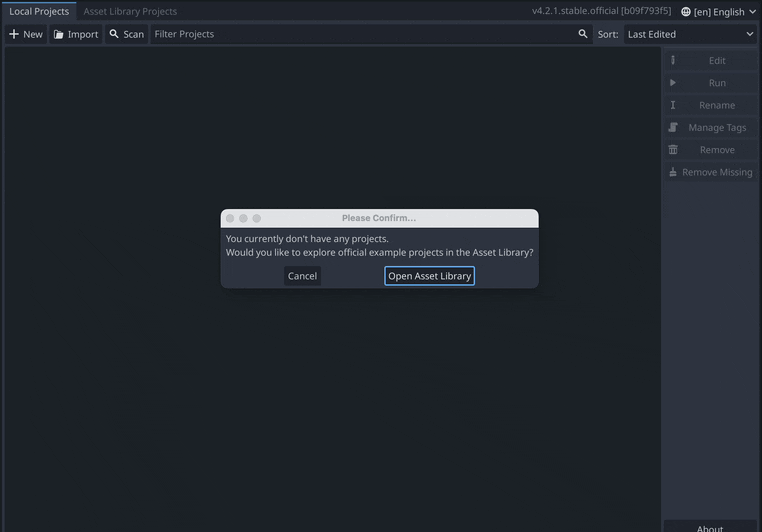
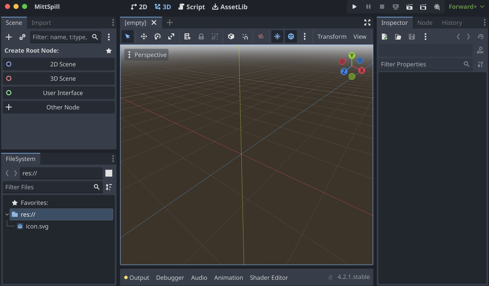
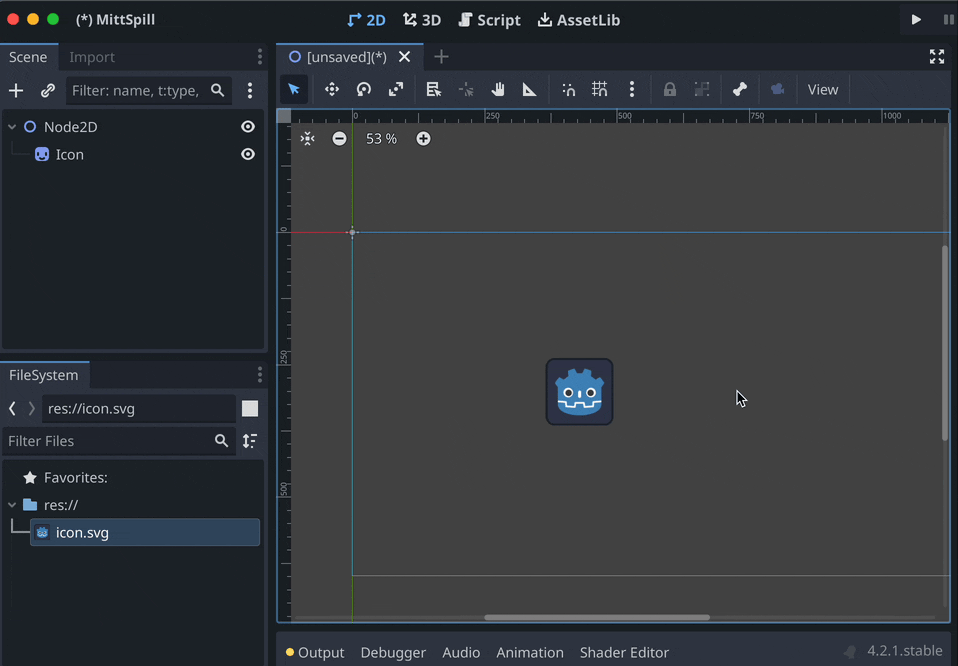
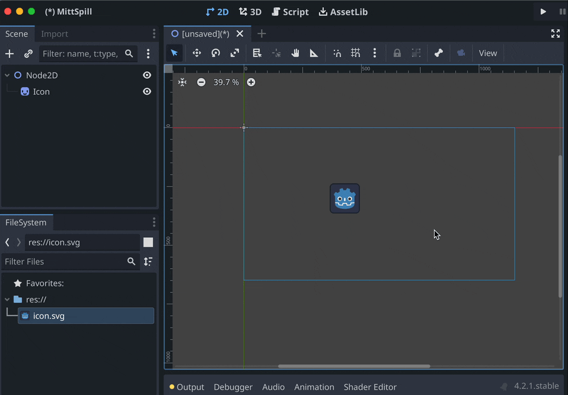

1 - Opprette prosjekt
Første gang du starter Godot blir du spurt om du vil åpne Asset Library – avbryt dette. Klikk deretter på knappen øverst til venstre, + New. Velg mappen du vil lagre prosjektet i, skriv inn prosjektnavnet, trykk på Create Folder, og til slutt Create & Edit.
Dersom du allerede har et prosjekt som ikke vises, kan du klikke på Import og bla deg frem til der du har det lagret.  Nå vil du se dette vinduet:

Øverst til venstre ser du Scene-vinduet. Her vil du etter hvert se alle nodene som ligger i scenen du jobber på.
Nede til venstre finner du FileSystem. Her vises alle prosjektfilene dine – altså alle filer som ligger i samme mappe som prosjektet.
Helt til høyre ser du Inspector. Her vises alle egenskapene du kan endre på når du har valgt en node, for eksempel posisjon, størrelse, hvilken tekstur den bruker, hvilken lyd den spiller av osv.
I midten ser du viewporten din. Foreløpig viser den en tom 3D-scene. Du kan bytte mellom ulike visninger med knappene øverst i Godot-vinduet: 2D, 3D og Script. På toppen av viewporten er det en rad med verktøy. Denne er dynamisk, slik at verktøyene byttes ut basert på hva du gjør. Animasjonen viser de du kommer til å bruke mest:

Legg merke til at noden som heter “Icon” blir valgt. Det er noden som er valgt i Scene-vinduet som påvirkes av verktøyene.
For å navigere i viewporten kan du klikke med musehjulet og dra eller holde inne mellomromstasten og dra. Hvis du bruker en touchpad, kan du dra med to fingre.

Den tynne blå ruten du ser, er spillets “kamera” – alt spilleren skal se, må være innenfor denne ruten.